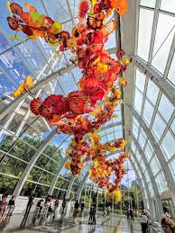
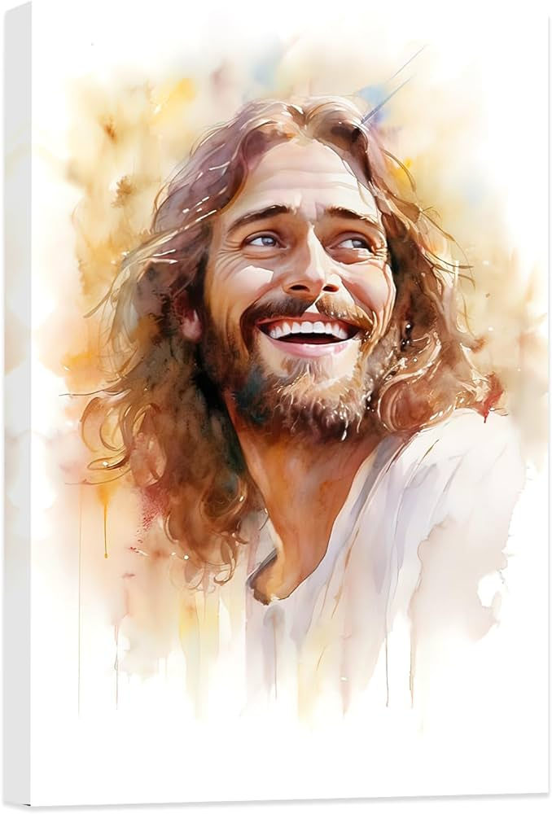

Hello, I'm Emily!
I love coding and have been developing many projects that this website showcases. I am currently attending BYU-Idaho. My major I plan to pursue is Cybersecurity.

My dog, Doby who was a puppy when I was in my junior year of high school in 2020. He is turning 6 soon!

I am inspired by sculpture art and this artwork is from the Chihuly Glass Art Museum in Seattle WA.

I love this picture of the Savior because I love the watercolor effect creating light behind Jesus Christ and his smiling face.